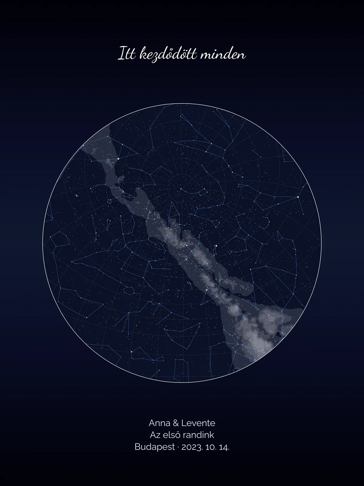
ND ART · személyre szabott vászonképek
Az égbolt
a Te pillanatodban.
Görgess
Egy hely. Egy pillanat.
A csillagok pontosan úgy,
ahogy akkor álltak.
Ez a Te csillagtérképed.
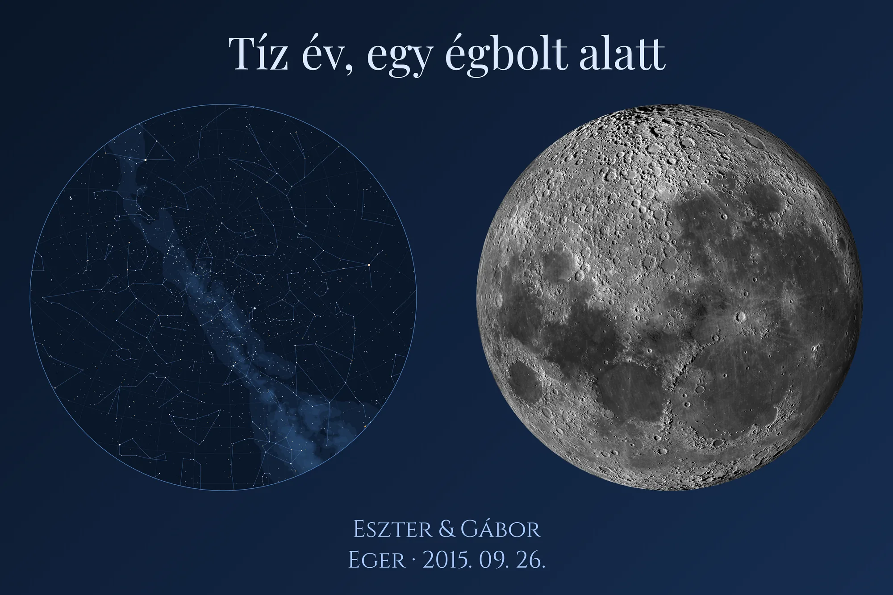
És a Hold —
ahogy azon az éjszakán ragyogott.
Akár három elem egy vásznon.
Csillagtérkép, holdfázis, saját fotó és felirat — ahogy a Te történeted kéri.
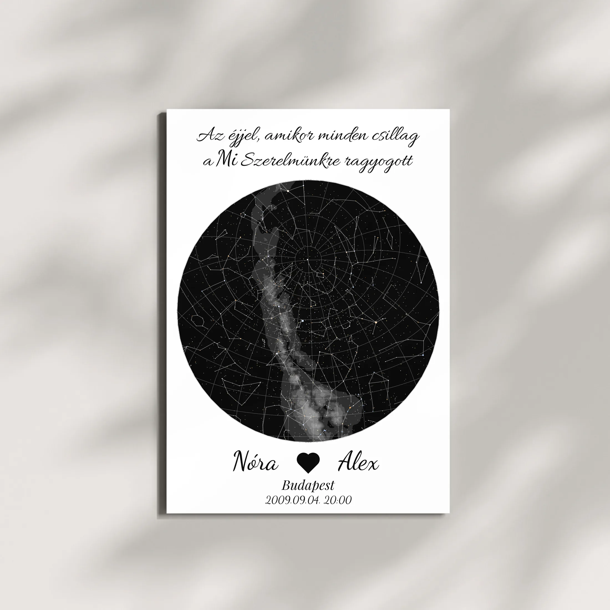
Prémium vászon,
kézzel feszítve.
Ilyen lesz a faladon.
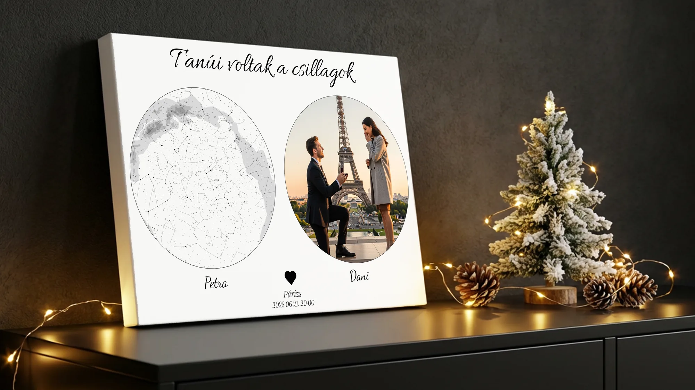
OKOSPONT
Okospont
Egy láthatatlan chip
a kép mögött.
Érintsd meg —
és megszólal a közös dalotok.
Vagy egy videóüzenet, vagy egy titkos galéria. A telefonod elég hozzá.
Alkalmak
Minden fontos éjszakának
van egy égboltja.
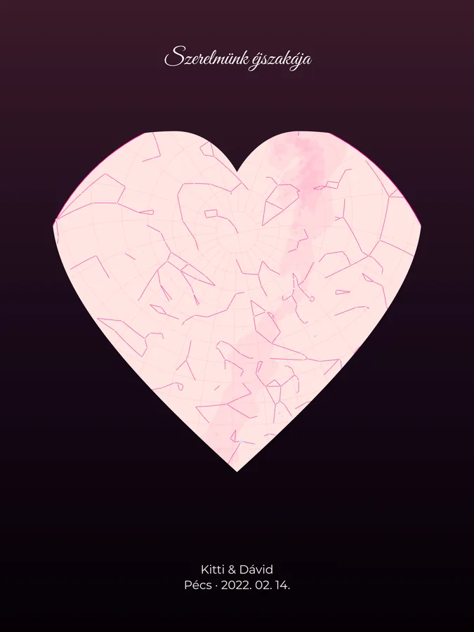
Szerelmünk éjszakája
Valentin-nap, évforduló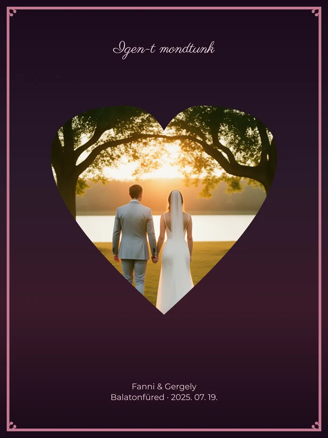
Az igen pillanata
Eljegyzés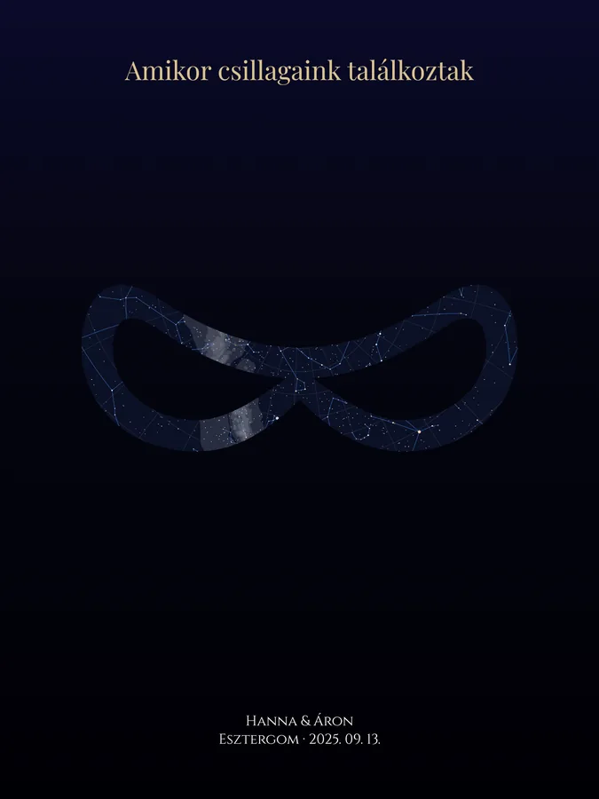
Örökké
Esküvő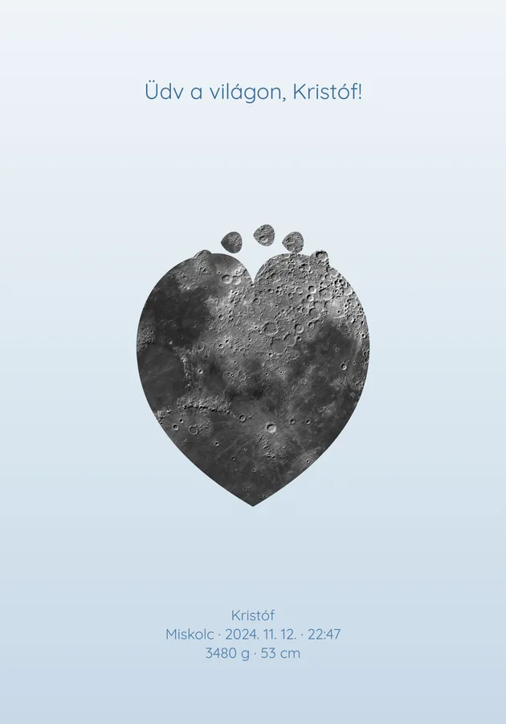
Üdv a világon
Születés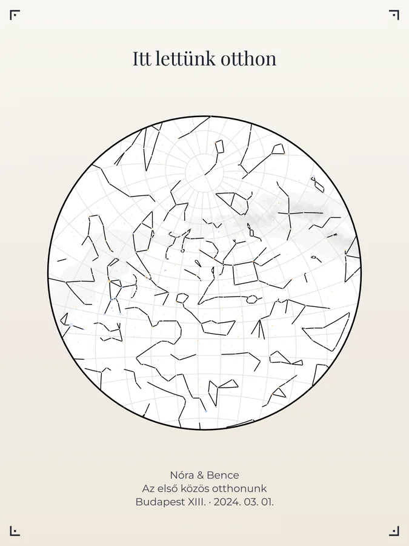
Itt lettünk otthon
Első közös otthon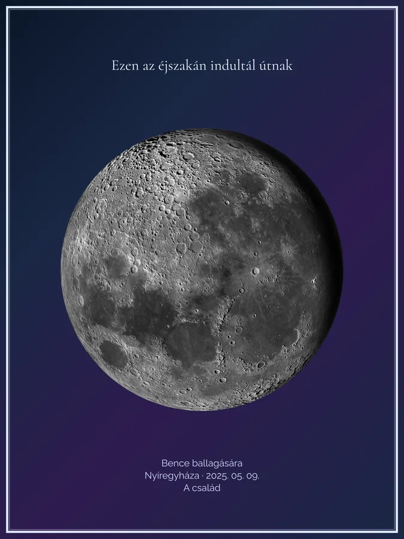
Ezen az éjszakán indult
Ballagás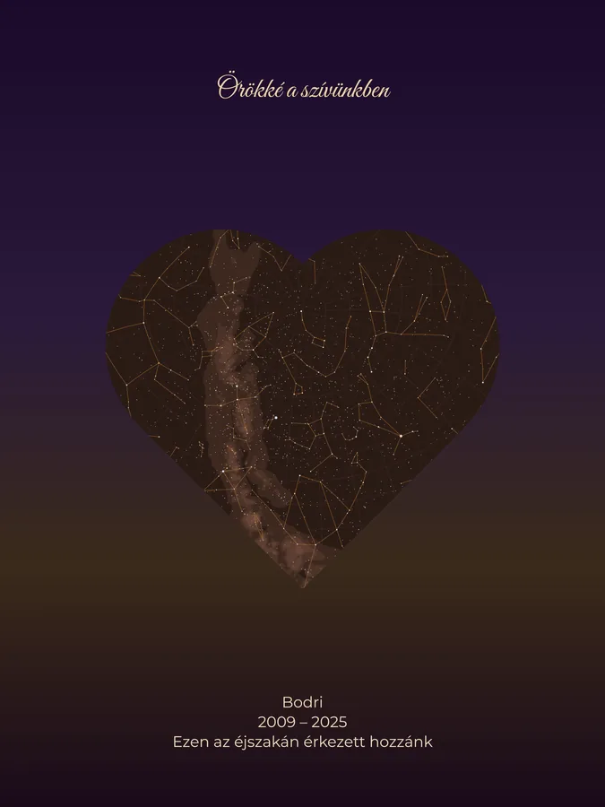
Ő is a család
Kedvencünk érkezése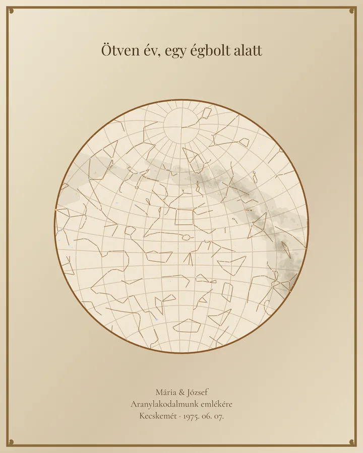
Egy égbolt alatt
AranylakodalomValami különleges készül.
Hamarosan indul — iratkozz fel, és elsőként szólunk.
Feliratkozomndart.hu